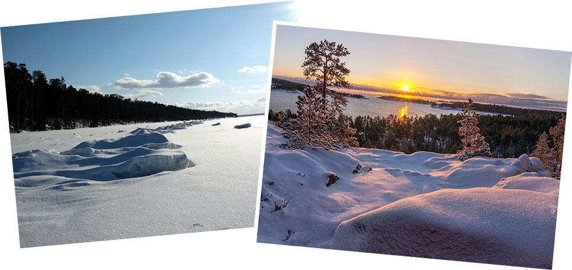

Трудно найти более экологичный вид путешествий, чем лыжные туры. Морозный свежий воздух, сверкающий на солнце снег и сказочные зимние пейзажи — все это атрибуты настоящего лыжного тура.
Этот лыжный тур для тех, кто желает в компании отдохнуть от городской суеты, насладиться красотой зимней природы, а заодно узнать для себя что-то новое. Тур рассчитан на неподготовленного любознательного туриста.
Мы будем любоваться красотами Ладоги и отправимся на легендарный остров Коневец. Прямо по льду Ладоги, любуясь открытыми просторами и волшебными картинами огромного Ладожского озера.
Этот остров расположен на западе Ладоги в 7 км от Владимирской бухты и знаменит песчаными уступами и пляжами, маленькими островами из гранитных валунов и Коневским монастырем.
Об основателе Коневского монастыря преподобном Арсении Коневском известно, что он был уроженцем Великого Новгорода.
Арсений был искусным ремесленником и немало преуспел в ковке медных сосудов. В возрасте примерно 20 лет он уходит в новгородский Лисогорский монастырь, где в 1379 году принимает монашеский постриг с именем Арсений. Прожив 14 лет в Лисогорском монастыре, Арсений покидает его и отправляется на Афон, в Грецию, предположительно в сербский Хиландарский монастырь. Арсений безвозмездно выделывает медную посуду не только для монастыря, в котором подвизался, но и для остальных обителей на Афонской горе.
Через три года, в 1393году, Арсений возвращается на родину, чтобы основать в северных землях обитель во имя Пресвятой Богородицы. Архиепископ Новгородский Иоанн благословляет его на устройство новой обители. Отправившись по реке Волхов в Ладожское озеро, Арсений ищет уединённое место для иноческой жизни и прибывает на о. Коневец. Однако, зная, что на Ладоге есть более отдалённые и пустынные острова, Арсений покидает Коневец и отправляется далее на север. По пути его застигает буря, и он вынужден вернуться обратно на Коневец. Переждав бурю, Арсений снова покидает остров, однако и в этот раз сильный ветер прибивает его лодку обратно к острову. В этом Арсений видит вышнее указание на то, что ему надобно остаться и основать монастырь именно здесь. И с тех пор его жизнь неразрывно связана с этим островом.
В дальнейшем монастырь обрастал монахами, постройками, имел уникальный фруктовый сад и поля. Шведы захватили остров во время Русско-шведской войны 1614-1617гг., заставив монахов выехать в Новгород.
Остров вернулся в состав Российской империи во время Великой Северной войны 1701г. 19 век- золотое время монастыря. Остров посетил император Александр II с семейством, Александр Дюма, Федор Тютчев и Николай Лесков.
В советское время территория острова была закрыта и там размещалась военно-морская база.
Посещающие остров туристы отмечают его уединенность и особую энергетику и красоту.
Утром в 6-40 грузимся в автобус вместе с лыжами у Московского вокзала Санкт-Петербурга и движемся в сторону Приозерска до бухты Владимирская, откуда начнется наше лыжное путешествие на остров Коневец.
Перед стартом устраиваем горячий перекус: кофе, чай, бутерброды, печенье и конфеты...
7 километров бескрайних просторов Ладожского озера!!!
На Коневце мы посещаем мужской монастырь, проходим до знаменитого Конь-камня, на котором стоит часовня, где когда-то получил приют Арсений Праведный, основатель монастыря. Конь-камень весит более 750 тонн, этот валун самый большой на острове и образован, как и другие валуны, ледником, который спускался со Скандинавских гор несколько тысяч лет назад.
После обеда в трапезной послушаем пение монахов, знаменитое своей проникновенностью, полюбуемся красотами и тишиной монастырской жизни.
И в обратный путь на большую землю!
Наш автобус доставит нас к месту старта, москвичи и гости Санкт-Петербурга могут остаться на следующие дни.
Собственные лыжи приветствуются, но желающие могут взять лыжное снаряжение напрокат.
Программа может быть изменена в связи с погодными условиями и ледовой обстановкой.
NB. Данное описание - это план путешествия. Организаторы сохраняют за собой право на его изменение в зависимости от конкретной ситуации.
Стоимость маршрута уточняйте на странице КАЛЕНДАРЬ, там же можно подать заявку на участие.
Для уезжающих в этот день из Санкт-Петербурга рекомендуемое время отъезда с Московского вокзала – не ранее 22 часов.
{/block}